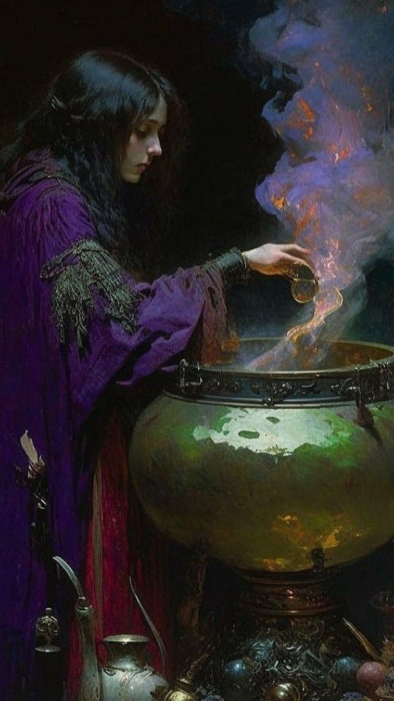

Promociones

Mi trayecto en el mundo esotérico
Comenzó hace 10 años su formación en centros holísticos locales, donde aprendió sobre la limpieza energética, uso de esencias naturales y protección espiritual.
Profundizó sus conocimientos en talleres de alquimia espiritual en México especializándome en la creación de perfumes y amuletos mágicos personalizados.